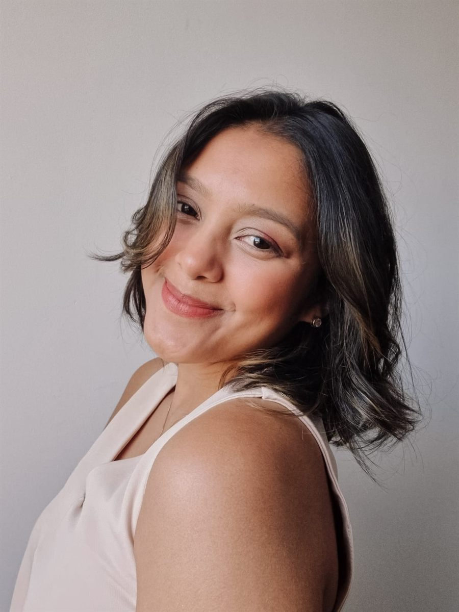

UGC Creator & Influencer · Curitiba/PR
Criando conteúdo que gera conexão e vendas
Do roteiro ao CTA, cada segundo pensado para a sua marca parecer recomendação de amiga e vender como anúncio.
+50 vídeos +40 marcas parceiras +1,5M views

Sobre mim
Olá, eu sou a Tati
Tenho 27 anos, sou UGC Creator & influencer em Curitiba/PR e formada em Marketing Digital. Minha rotina de beleza, moda, lifestyle e gastronomia vira conteúdo que conecta de verdade com quem assiste.
São mais de 50 vídeos para 40 marcas, com um olhar analítico que une estratégia e autenticidade para transformar produto em desejo de consumo e gerar resultado.
- +40 marcas parceiras
- Curitiba/PR · Brasil
Marcas que confiam no meu trabalho
Destaques
Os melhores resultados
Será que você já me viu por aí?
Com a Sterily, uma receita de canjica cremosa mostrou a esponja mágica Magic Clean em ação e passou de 1,5 milhão de views.
Com o Wellhub, um tour pela academia somou 28,5 mil views no Reels.
E a receita de brigadeiro saudável alcançou 23,2 mil views.
Nichos
Que tipo de conteúdo você busca hoje?
Navegue pelos nichos e descubra como cada marca ganhou vida nos meus vídeos.
Fotos que mostram o produto na vida real
Como eu te ajudo
Do roteiro ao anúncio pronto.
Escolha um serviço ou combine vários. Eu monto a proposta certa para o momento da sua marca.
Números e depoimentos